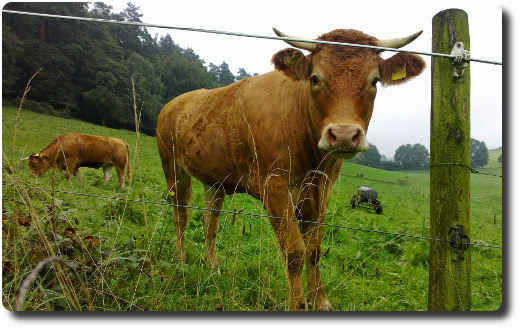

Vernebelte Wanderung im Odenwald
Gestern haben wir eine Wanderung durch den Odenwald unternommen. Es ging von Hetzbach über Feldwege an Kuhweiden vorbei in den vernebelten Wald hinein. Dort gabs eine Menge Pilze zu sehen.
Die Luft war herrlich frisch und sauber. Nach zwei Stunden sind wir in Beerfelden angekommen und haben uns den Zwölf-Röhren-Brunnen und die Stadtkirche angeschaut. Schließlich ging es in einem großen Bogen wieder zurück nach Hetzbach.
Unterwegs haben wir den ältesten und besterhaltenen Galgen in Deutschland gesehen: https://de.wikipedia.org/wiki/Beerfelder_Galgen. Die letzte Hinrichtung fand dort 1804 statt.
